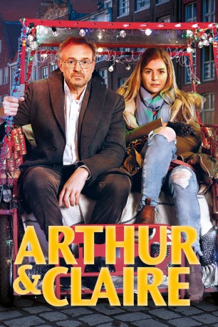

#9556 Arthur & Claire
 
 IMDB-Wertung: 7.1 / 10
IMDB-Wertung: 7.1 / 10  Metascore: 0
Metascore: 0 
Ein Mann, eine Frau und eine Nacht, in der es um alles oder nichts geht. In einem Hotel in Amsterdam begegnen sich zwei Menschen, von denen jeder für sich bereits mit dem Leben abgeschlossen hatte. Doch dann vereitelt Arthur (Josef Hader), der nur ein letztes stilvolles und vor allem einsames Dinner im Sinn hatte, durch Zufall den Plan der jungen Claire (Hannah Hoekstra). Aus den beiden Lebensmüden wird eine unerwartete Schicksalsgemeinschaft, die gemeinsam in die Amsterdamer Nacht aufbricht und zwischen Grachten, Coffee Shops, bestem Whiskey und vorsichtiger neuer Freundschaft beginnt, die Pläne des Anderen gehörig zu durchkreuzen. In klugen, witzigen Dialogen kreisen Arthur und Claire um die Dinge, die das Leben wirklich ausmachen und beschließen, sich diesem Leben zu stellen und es bis zum letzten Augenblick auszukosten.
Jahr: 2017
Dauer: 98 Minuten
FSK: 12
Land: Deutschland Studio: UFATonspuren:
Untertitel:
Auflösung: 1080p (1920x800) Größe: 3225 MB
Genre: Drama, Komödie
Regisseur: Miguel Alexandre
Drehbuch: Miguel Alexandre, Josef Hader, Stefan Vögel
Soundtrack:
Darsteller:
 Josef Hader als Arthur
Josef Hader als Arthur- Hannah Hoekstra als Claire
 Rainer Bock als Dr. Sebastian Hofer
Rainer Bock als Dr. Sebastian Hofer- Guy Clemens als Receptionist
- Ruben Brinkman als Barista coffeeshop
- Matthias Emberger als Kellner
 Florence Kasumba als Maitre
Florence Kasumba als Maitre- Errol Trotman-Harewood als Barkeeper
- Stella McCusker als Older woman in hotel
- Marijtje Rutgers als Staff at rental car company
- Pepijn Schoneveld als Roomservice
- Robert Porter Templeton als Restaurant Guest
- Daron Yates als Waiter
Datei: X:\2017(A-F)\Arthur & Claire (2017, FSK12, 1920x800).mkv seit 11.09.2018
Festplatte: HD 2017(A-Z)-2018(A-F)
 Es gibt insgesamt 152 Filme in der Gruppe '2017(A-F)'
Es gibt insgesamt 152 Filme in der Gruppe '2017(A-F)'